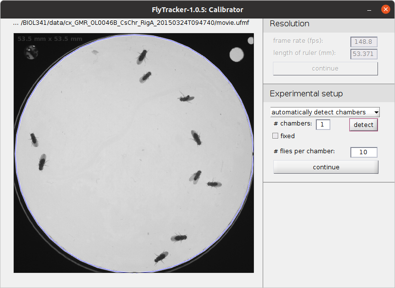
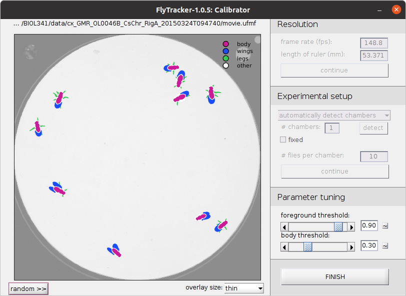
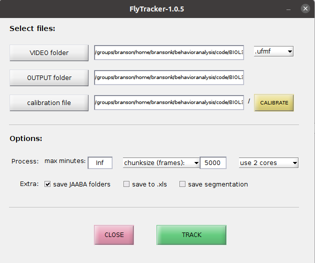
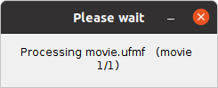

FlyTracker tutorial
- In MATLAB, navigate to the
FlyTracker directory.
- At the MATLAB prompt, type
tracker. This will open the FlyTracker GUI.
- Click VIDEO folder to select the experiment directory containing your video (
movie.ufmf).
- Click CALIBRATE to set parameters.
- In the Calibrator drag the line to match the diameter of the arena. Set the length of ruler (mm) to be 53.371, the diameter of the arena. This is how we tell FlyTracker how to convert from pixels to millimeters.

- Click continue. FlyTracker will estimate what the arena would look like if no flies were in it (Background model).

- Click detect to automatically detect the circular arena. Check that the plotted blue circle matches the true arena wall. FlyTracker will ignore everything outside of this circle, for instance the indicator LED telling us when the red lights are on. 
- Count how many flies are in your arena, and check that the # flies per chamber is accurate.
- Click continue.
- Check that the classification of pixels into body, wings, legs, and other (background) is accurate. Click random to go to a different, randomly chosen frame. Change overlay size to none to see what the original image looks like. We have not needed to adjust the parameters under Parameter tuning, but you can see how this affects your classification. You can click the ~ button to go back to the defaults. 
- Click FINISH to finish setting parameters. Notice that your calibration parameters and background model were saved to your OUTPUT folder.
- Set the multi-processing parameters. We suggest using 4 chunks and 4 cores.
- Select save JAABA folders to save data for use in JAABA.

- Click TRACK and wait!

- When tracking is complete, you can look at the output with the visualizer. Type
visualizer at the MATLAB prompt.
- This will open the Visualizer GUI. Select the video you tracked under the Video -> Open menu.

- There is a lot of functionality in this GUI that we will ignore. We suggest examining the tracking by looking at different frames (e.g. by moving the slider bar) or clicking the play button.
{kind=link}
{kind=link}
{kind=link}
{kind=link}
{kind=link}